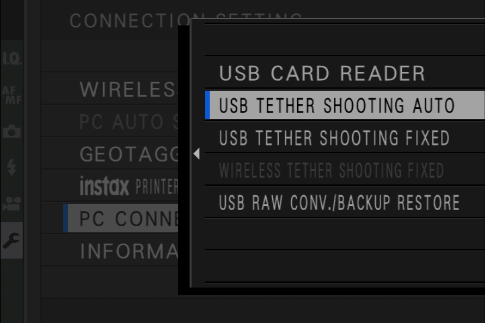
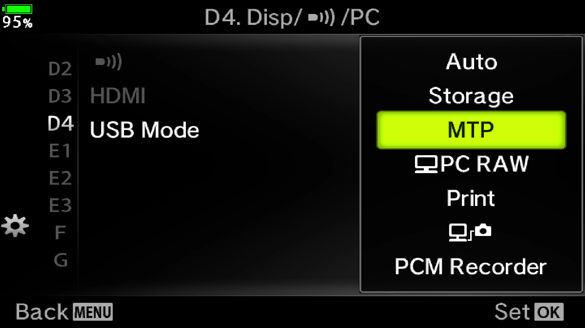
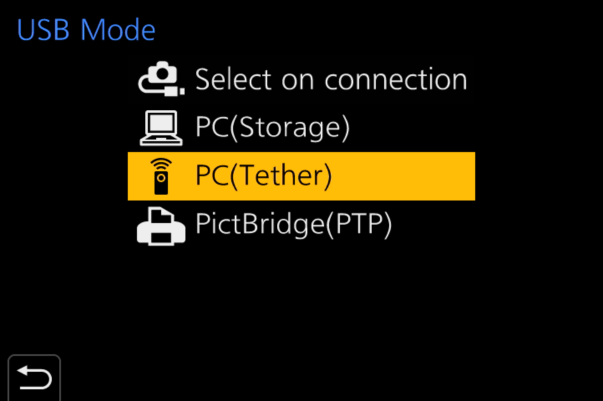
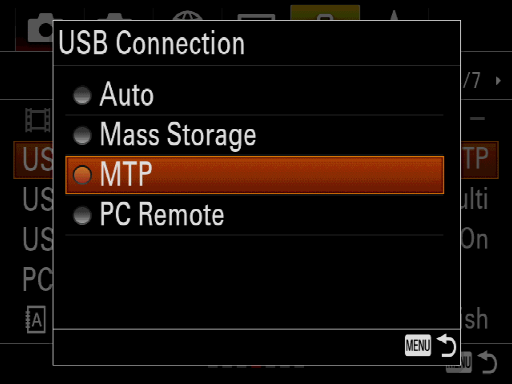

If you are running iOS 13.2 or higher, Cascable supports importing images from any PTP/MTP standards-compliant camera connected to your iPhone, iPad, or iPod touch via USB.
Once your camera is configured correctly and connected, Cascable should detect and connect to it within a few seconds.
When connecting your camera to your iOS device, it must be in PTP, MTP, PictBridge, or Tethering mode for Cascable to be able to detect it as a wired camera.
Some cameras will ask you what USB mode to use when connecting them, and some need you to manually change their USB mode setting in their menus. If your camera doesn't have this setting (most Canon and Nikon models don't), they'll usually only support PTP/MTP mode, which is the correct mode for Cascable.
We have included screenshots of the setting from various cameras below. Consult your camera's manual for detailed instructions.

Fujifilm

Olympus

Pansonic

Sony
How you physically connect your camera to your iOS device will depend on the both the connector your camera has, and the connector your iOS device has. Some common examples can be found below.
If you have an iPad with USB-C, you can connect your camera either directly with a USB-C cable if the camera also has USB-C, or via a USB-C to USB-A (female) adapter and the cable that came with your camera if it doesn't. Apple sells a USB-C to USB-A (female) adapter, but any high-quality, standards-compliant adapter should work.
If your iOS device has a Lightning connector, you must use a Lightning to USB-A (female) adapter, then the cable that came with your camera. The Apple Lightning to USB Camera Adapter is such an adapter, and there are third-party alternatives.
If your camera came with a USB-C to USB-C cable, you can purchase a USB-A to USB-C cable from many reputable electronics retailers.
If your camera isn't being detected by Cascable, or it is and you're getting a No Access error, try the following steps: